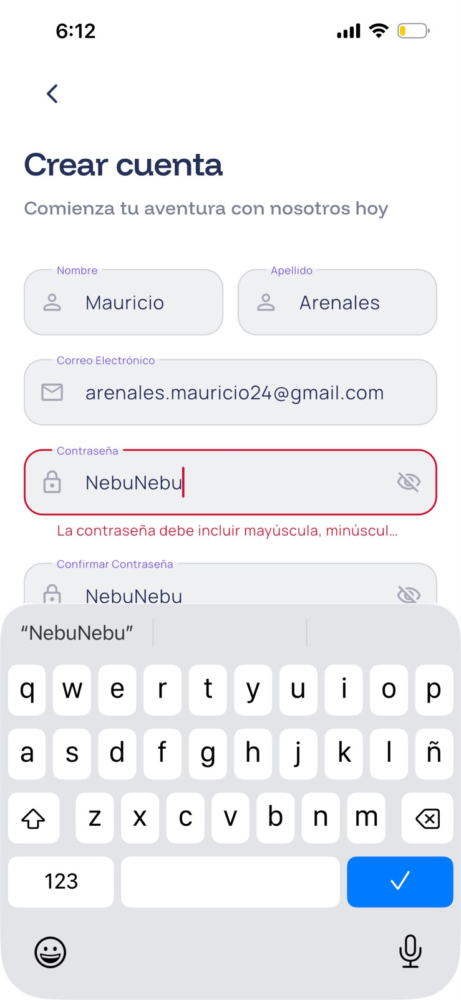
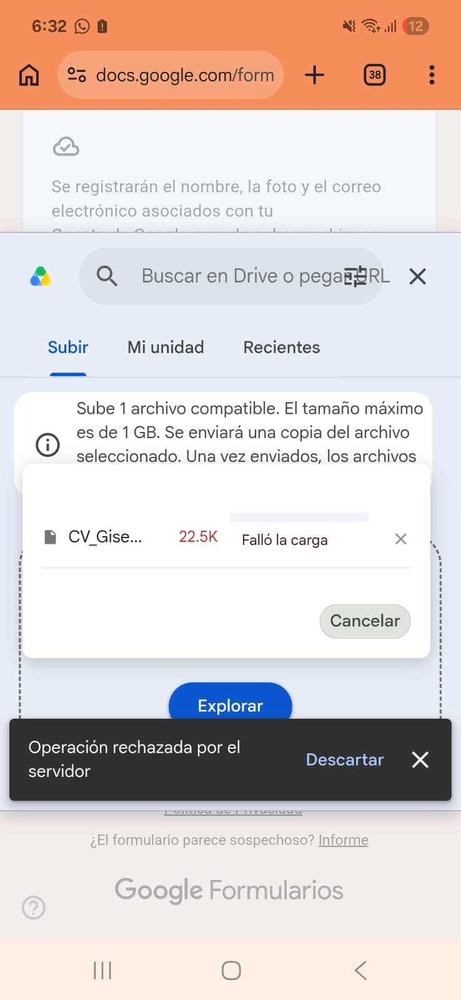
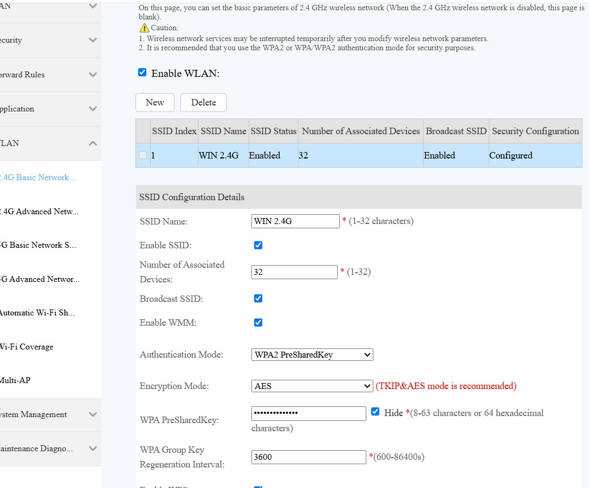

Rehabilitación oral
Restauraciones, estética dental y rehabilitación funcional para recuperar función y estética con resultados predecibles.
GISDENT
Dra. Gisella Solis VegaAtención Odontológica
Consultorio Odontológico GisDent, a 5 min de la PUCP, ofrece rehabilitación oral, estética y tratamientos integrales con seguimiento profesional.
01 · Servicios
Restauraciones, estética dental y rehabilitación funcional para recuperar función y estética con resultados predecibles.
Diagnóstico completo, prevención y tratamiento conservador con seguimiento clínico constante.
Planes de estética y blanqueamiento con objetivos de armonía, sonrisa natural y salud pulpar priorizada.

02 · Nosotros
Cirujana dentista, especialista en rehabilitación oral y con experiencia en atención clínica general, servicio rural y práctica hospitalaria.
03 · Trayectoria
Formada en la UNMSM y con residencia de Rehabilitación Oral en UniCPO (Bauru, Brasil), combina formación académica continua con práctica clínica real para ofrecer una atención de alto nivel.
04 · Galería








05 · Contacto
WhatsApp: +51 937 796 690
Instagram: @gisdent08
Correo: gisella.solis.unmsm@gmail.com
Dirección: Pueblo Libre, Lima, Perú
Horario: Lun - Sáb, 8:30 a 20:00